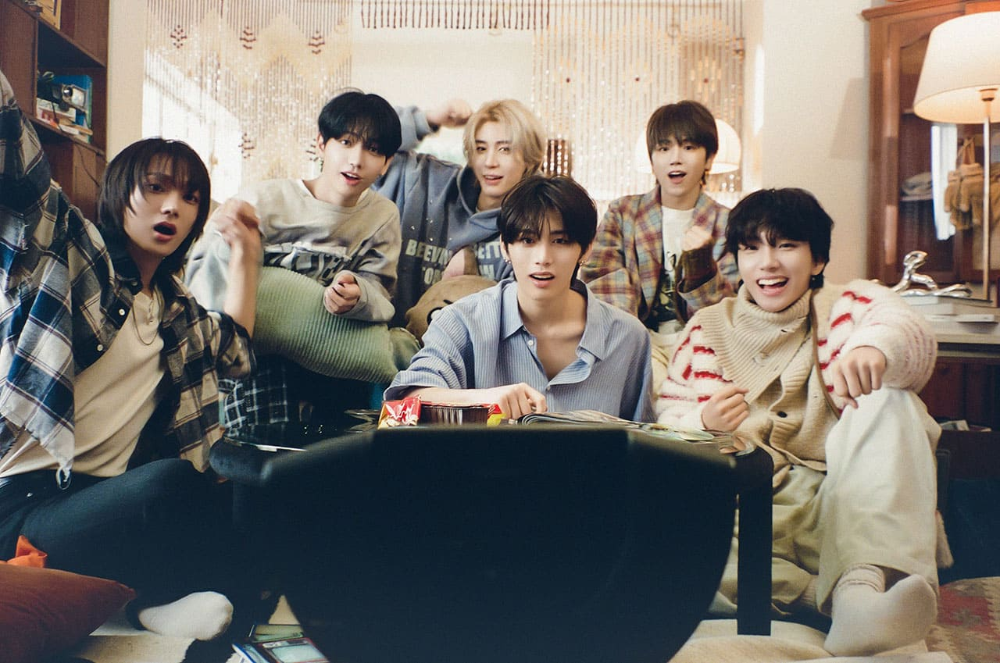

About Me
Hi, I’m Aisyah! I’m currently a diploma student with a strong interest in travelling, cooking, watching movies, and listening to music. I’ve been proud to make the Dean’s List for two semesters, and I value my ability to adapt well to new environments. I enjoy exploring new experiences and always look for opportunities to learn and grow. Welcome to my page!
Skills
- Barista skills
- Speaking French
- Cooking
- Library Cataloging
Education
Diploma in Informatics Library
Universiti Teknologi MARA (UiTM), Kedah 2023 – 2026Currently pursuing a diploma in Library Informatics, focusing on information management, digital resources, and library systems. This program enhances both my technical and organizational skills, preparing me for modern information-related fields. Currently in my 4th semester.
High School (SPM) Science Rumah Tangga Stream.
SMK Kusel — 2018 – 2022Elective subjects: Visual Arts Education (Pendidikan Seni Visual), Additional Science (Sains Tambahan), and Home Science (Sains Rumah Tangga) Achieved 5As in SPM, demonstrating strong academic performance across science, arts, and practical subjects.
Timeline
| Year | Level | School/Institution |
|---|---|---|
| 2012 - 2014 | Primary School | SK LKTP Tersang 3, Pahang |
| 2014 - 2017 | Primary School | SK Bandar Baru Kuala Selangor, Selangor |
| 2018 - 2022 | High School | SMK KUSEL |
| 2023 - 2026 | Diploma | UiTM Kedah |
Favourite
My Favorite K-pop Group: BOYNEXTDOOR
I love listening to BOYNEXTDOOR! BOYNEXTDOOR’s concept is simple—they’re charismatic and friendly, just like the typical boy next door. Their music illustrates everyday stories and emotions that resonate with our daily lives, making their songs relatable to the audience.💖
Latest Release
Check out their latest release
Favourite song
Check out one of my favorite songs by BOYNEXTDOOR!
Hometown
I was born in Selangor, a place that holds many of my early memories. Selangor is a vibrant and developed state in Malaysia, known as the country’s most populous and economically important region. It surrounds the capital city, Kuala Lumpur, and offers a mix of modern urban life and beautiful natural spots. Selangor is famous for its shopping malls, industrial hubs, and cultural attractions. It’s a place full of opportunities and diversity, making it a lively place to live and work. Currently, I live in Sungai Petani, Kedah, where I’m continuing my studies and growing as a person. Sungai Petani is a bustling town in the northern state of Kedah, Malaysia. It’s known as an important commercial and industrial center in the region, offering a more relaxed pace of life compared to the bigger cities. Sungai Petani has a rich cultural heritage with many traditional markets, local food, and historical sites. It’s a great place that blends the charm of small-town living with the conveniences of modern facilities.
Interests
- Listening to music
- Hiking and outdoor adventures
- Watching movies and K-drama
- Reading novel
Family & Friends
I cherish my close-knit circle of family and friends who support and inspire me. We enjoy spending quality time, sharing laughter, and creating meaningful memories together.
My Family
I come from a loving family of five, which includes my supportive parents, my two wonderful little brothers, and myself. Each of us bringing our own unique energy and joy to our home.
My Friends
I have three amazing friends who have been with me through thick and thin — each one with their own personality, but together we share countless laughs, memories, and unforgettable moments.
My Roommates
Living with my roommates has been a fun and unforgettable experience — we share not just a space, but late-night talks, laughter, and a bond that feels like family.
Contact Me
Phone: 012-2699397
Email: nuraisyyyah@gmail.com